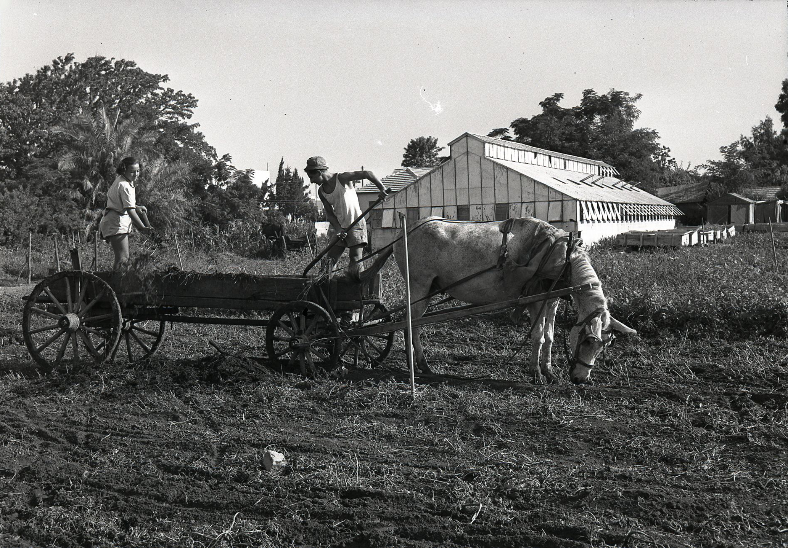
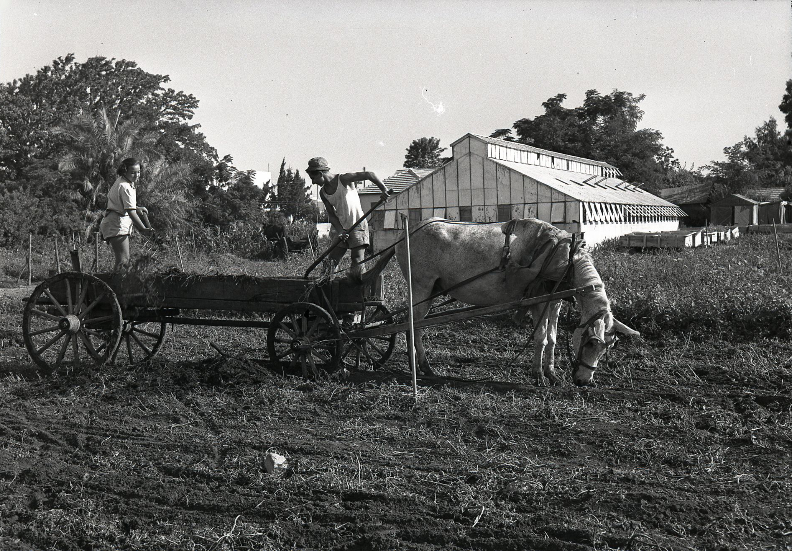
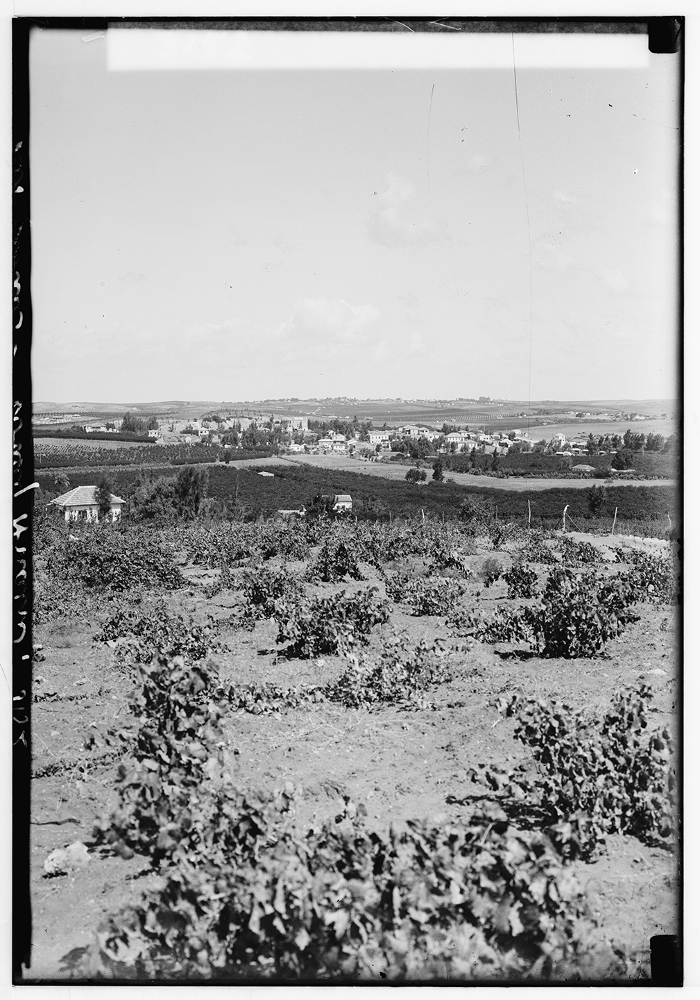
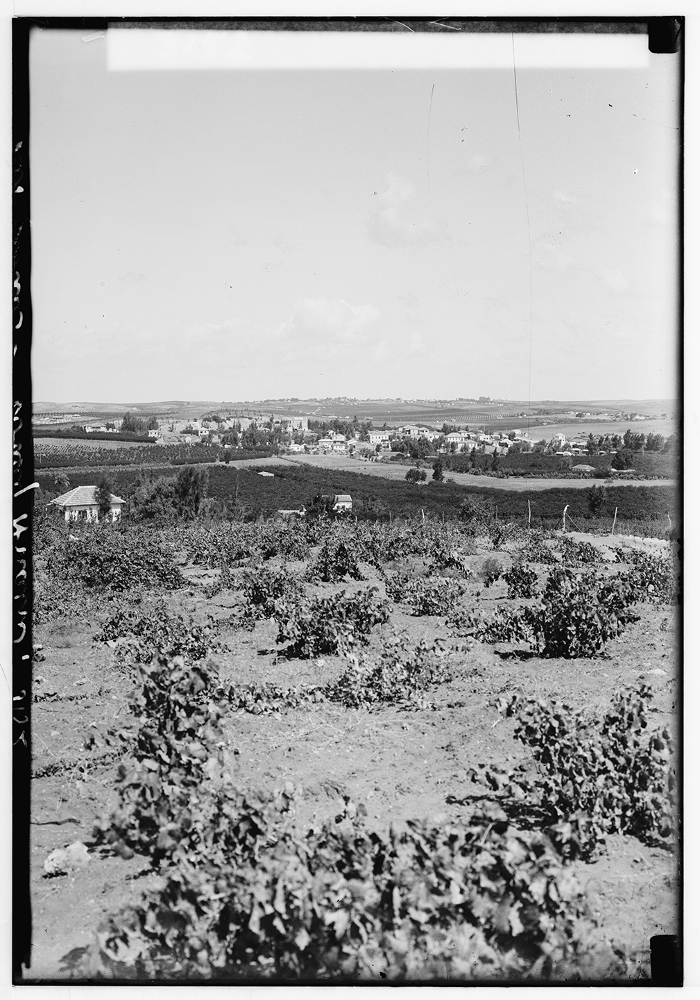

 



HOURS AFTER MY mother took her last breath on earth…
After we opened the windows to let the spirits out…
After we lit incense stick after incense stick…
After we watched MMA fighters on TV in the basement…
And the smoke kept rising. The chain must not be broken.
SECTION TWO opens as the previous memory fades…
Now the perspective widens to a new frame…
The city’s edge meets the garden…
We follow the lines of growth and care…
And learn how places hold time.
SECTION FOUR returns to the tight frame…
Left-rail narration continues the thread…
The horizontal image sits steady at right…
Margins and rhythm match Section One…
And the cycle of views goes on.
SECTION FIVE shifts the rail again…
Now the narrative hugs the right margin…
While the image holds the left field of view…
Framing the next turn in the story…
With the same cadence and pace.
SECTION NINE brings us back to the close frame…
The left rail carries the narration forward…
On the right, the image steadies the scene…
Margins, rhythm, and pacing mirror Section One…
So the story breathes in familiar cadence.
SECTION ELEVEN continues the thread…
The close, steady framing returns…
Left-rail narration, right media field…
Margins and rhythm unchanged…
As the story settles into focus.